第4章：补充视图的原型设计¶
你的应用程序仍然需要另外三个全屏视图：
- Welcome
- History
- Success
在上一章中，你布置了Exercise视图。在本章中，你将布置历史和欢迎视图，然后完成挑战，创建成功视图。这样你的应用程序的原型就完成了。
创建历史视图¶
本节将学习的技能：处理日期；扩展类型；快速帮助注释；创建表单；在一个集合上循环；用ZStack分层视图；堆栈对齐值。
在这一章中，你将只是做一个列表视图的模拟。在下一章中创建数据模型后，你将修改这个视图以使用这些数据。
➤ 继续上一章的项目或打开本章启动文件夹中的项目。
➤ 创建一个新的SwiftUI视图文件，名为HistoryView.swift。对于这个模拟项目，在HistoryView中添加一些样本历史数据，在body上面：
let today = Date()
let yesterday = Date().addingTimeInterval(-86400)
let exercises1 = ["Squat", "Step Up", "Burpee", "Sun Salute"]
let exercises2 = ["Squat", "Step Up", "Burpee"]
你将显示两天内完成的练习。
➤ 用此代码替换Text("Hello, World!")：
VStack {
Text("History")
.font(.title)
.padding()
// Exercise history
}
你已经为这个视图创建了标题，周围有一些填充物。
创建一个表单¶
SwiftUI有一个容器视图，可以自动格式化其内容，使其看起来有条理。
➤ 在 VStack内，用这段代码替换// Exercise history：
Form {
Section(
header:
Text(today.formatted(as: "MMM d"))
.font(.headline)) {
// Section content
}
Section(
header:
Text(yesterday.formatted(as: "MMM d"))
.font(.headline)) {
// Section content
}
}
在Form容器视图中，你创建了两个部分。每个Section都有一个带有日期的标题，使用headline字体大小。
这段代码把昨天和今天的日期作为章节标题，所以你的视图会有与下面不同的日期。
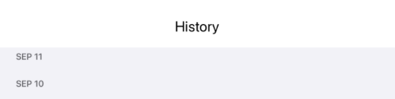
延伸日期类型¶
当你创建定时器视图时，你快速浏览了Swift Date类型并使用了其中的一个方法。现在是时候进一步了解它了。
Swift
一个Date对象只是相对于2001年1月1日00:00:00 UTC的一些秒数。要把它显示为特定时区的日历日期，你必须使用DateFormatter。这个类有一些内置的样式，名为short、medium、long和full，在DateFormatter.Style的开发者文档页面的链接中描述。你也可以指定你自己的格式为String。
➤ 打开DateExtension.swift。第一个方法展示了如何使用DateFormatter。
func formatted(as format: String) -> String {
let dateFormatter = DateFormatter()
dateFormatter.dateFormat = format
return dateFormatter.string(from: self)
}
DateFormatter只有默认的空初始化器。你可以创建一个，然后通过设置你关心的属性来配置它。这个方法使用其format参数来设置dateFormat属性。
在HistoryView中，你传递MMM d作为format。这指定了三个字符的月份--所以你得到的是SEP或OCT--和一个字符的日期--所以你得到了一个数字。如果数字是个位数，这就是你看到的。如果你指定MM dd，你会得到月和日的数字，如果数字是个位数，会有前导0：09 02而不是SEP 2。
一旦你配置了dateFormatter，它的string(from:)方法将返回日期字符串。
如果你只想得到用户的当前时区，你不必担心时区问题。这就是默认设置。
格式化的快速帮助注释¶
用formatted(as:)扩展Date类，可以很容易得到你想要的格式的Date：today.formatted(as: "MMM d")。
Swift
你可以添加方法来扩展任何类型，包括那些内置于软件开发工具包的类型，如Image和Date。然后，你可以像使用内置方法一样使用它们。
➤ 看看formatted(as:)方法上面的注释：
/// Format a date using the specified format.
/// - parameters:
/// - format: A date pattern string like "MM dd".
这是一种特殊的注释。它出现在Xcode的快速帮助中，当你用Option-click方法名称的时候：
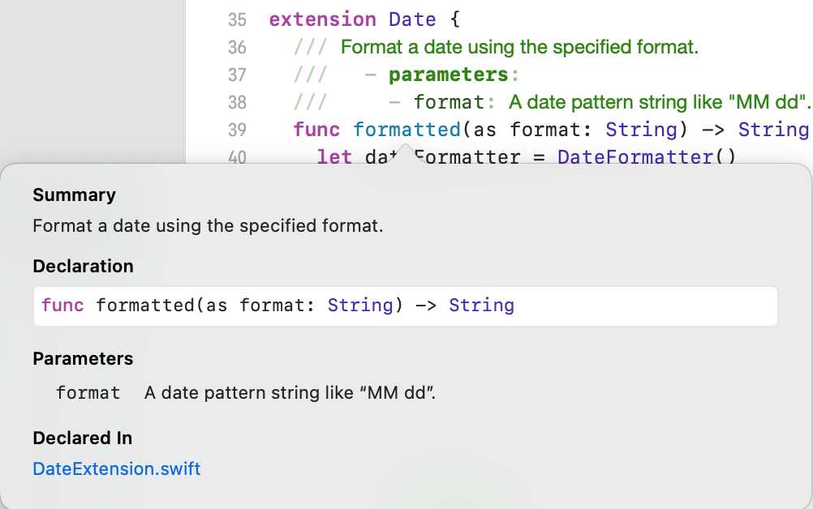
它看起来就像所有内置的方法总结一样!
以这种方式记录你所写的所有方法是一种很好的做法。苹果的格式化快速帮助的文档在apple.co/33hohbk。
循环处理一个集合¶
➤ 现在，回到HistoryView.swift中，填写部分内容。
为了显示每一天完成的练习，你将使用ForEach来循环处理exercises1和exercises2数组中的元素。
➤ 在第一个Section中，用这段代码替换// Section content：
ForEach(exercises1, id: \.self) { exercise in
Text(exercise)
}
在ContentView中，你在一个数字范围内进行循环。这里，你使用了第三个ForEach初始化器：
init(Data, id: KeyPath<Data.Element, ID>, content: (Data.Element) -> Content)
exercises1数组是Data，\.self是每个数组元素的标识符的关键路径。\.self的关键路径只是说数组中的每个元素是它自己的唯一标识符。
当循环访问每个数组元素时，你把它分配给本地变量exercise，并在Text视图中显示。
➤ 在第二个Section中，用几乎相同的代码替换//Section content：
ForEach(exercises2, id: \.self) { exercise in
Text(exercise)
}
这一次，你显示的是exercises2阵列。
➤ 刷新预览，以欣赏你的练习历史：
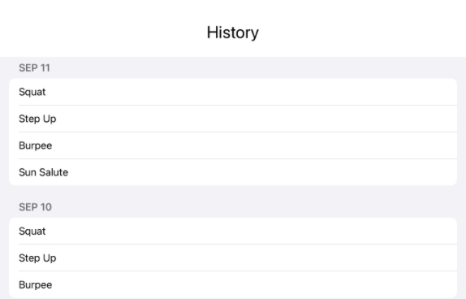
在另一个层中创建一个按钮¶
在第6章"为你的应用程序添加功能"中，你将实现这个视图作为一个模态表出现，所以它需要一个按钮来解散它。你经常会在模态表的右上角看到一个解散按钮。在不影响HistoryView其他部分布局的情况下，最简单的方法是把它放在自己的层中。
如果你认为HStack是沿着设备的X轴排列其内容，而VStack是沿着Y轴排列视图，那么ZStack容器视图则是沿着垂直于设备屏幕的Z轴堆叠其内容。可以把它看作是一个深度堆栈，分层显示视图。
➤ Command-click VStack以将其嵌入ZStack，然后在ZStack的顶部添加此代码：
Button(action: {}) {
Image(systemName: "xmark.circle")
}
这是你现在视图的顶部部分：
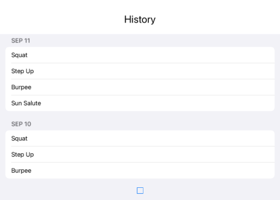
这个按钮在视图中是居中的，因为默认的堆栈对齐方式是center。因为你在源代码中的VStack上面添加了Button代码，所以它在屏幕上处于VStack的下方，所以你只看到它的轮廓。
这种安排有点违反直觉，除非你认为它是把第一个视图放在一个平面上，然后把下一个视图分层在上面，以此类推。所以将按钮声明为第一个视图会将它放在堆栈的底部。如果你想让按钮在顶层，就在ZStack中最后声明它。
在这种情况下，这并不重要，因为你将把按钮移到视图的右上角，在VStack中没有任何东西可以覆盖它。
你可以为任何种类的堆栈指定一个alignment值，但它们使用不同的alignment值。VStack alignment值是水平的：leading, center或trailing。HStack的alignment值是垂直的：top, center, bottom, firstTextBaseline或lastTextBaseline。
要指定ZStack的对齐方式，你必须同时设置水平和垂直对齐值。您可以指定单独的水平和垂直值，或者像topTrailing这样的组合值。
➤ 用这个替换ZStack {：
ZStack(alignment: .topTrailing) {
你设置ZStack alignment参数是为了将按钮定位在视图的右上角。ZStack中的其他视图有自己的alignment值，所以ZStack的alignment值不会影响它们。
现在按钮是可见的，但它很小，而且有点太靠近角落的边缘。
➤ 向Button添加这些修改器，以调整其大小和位置：
.font(.title)
.padding(.trailing)
刷新预览以看到结果：
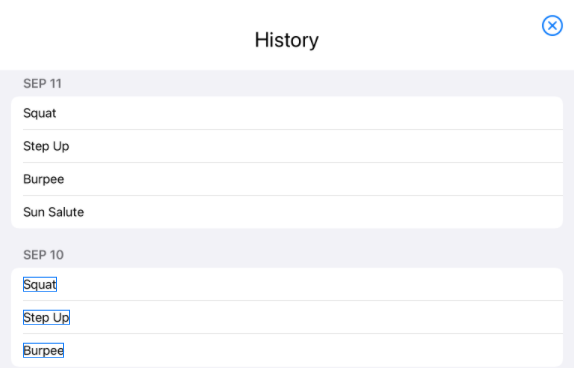
创建欢迎视图¶
本节将学习的技能：refactoring/renaming一个参数；修改图像；使用自定义修改器；带有文本和图像的Button标签。
➤ 打开WelcomeView.swift：
WelcomeView是你的应用程序的页面风格TabView中的第一个页面，所以它应该有和ExerciseView一样的标题。
➤ 用这一行替换Text("Hello, World!")：
HeaderView(exerciseName: "Welcome")
你希望这个页面的标题是Welcome，所以你把这个作为exerciseName参数的值传递给它。HeaderView也显示四个练习的页码：
重构HeaderView¶
在这里使用HeaderView会引起两个问题：
- 欢迎页没有页码。
- 参数名称
exerciseName不是Welcome的好描述。
第一个问题很容易解决。这个应用程序只有一个非锻炼页面，所以你只需要在HeaderView中再添加一个页面number。
➤ 在HeaderView.swift中，在画布预览中，复制1.circle的Image，然后把第一个Image改成显示一个手势：
Image(systemName: "hand.wave")
➤ 刷新预览以查看其外观：
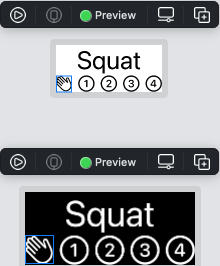
这就很好了。
现在要重新命名exerciseName属性。它的目的是作为页面的标题，所以titleText是一个更好的名字。
你可以在你的应用程序中搜索所有出现的exerciseName，然后决定是否将其改为titleText。在一个更复杂的应用程序中，这种方法几乎保证你会忘记一个或改变一个不应该改变的。
Xcode有一个更安全的方法!
➤ Command-click点击第一个出现的exerciseName并从菜单中选择Rename...：
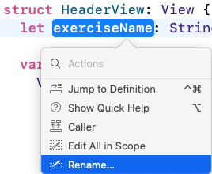
Note
如果你在Text(exerciseName)中点击exerciseName，你会看到更长的菜单，包括嵌入HStack等。重命名...是在这个菜单的底部。
Xcode显示所有需要改变的代码语句：
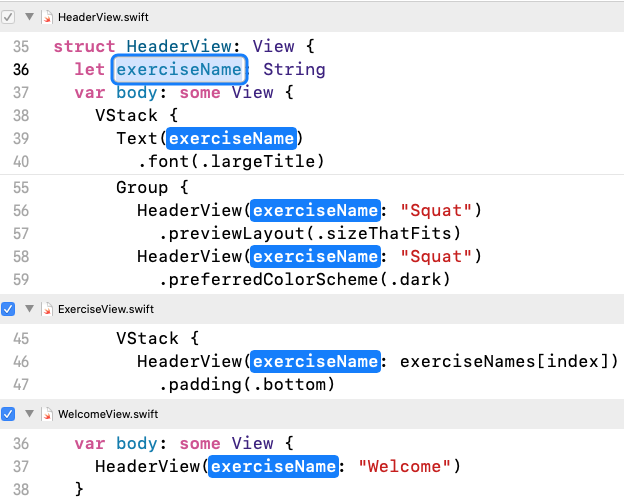
➤ 第一个实例以不同方式突出显示。输入titleText，所有的实例都会改变：
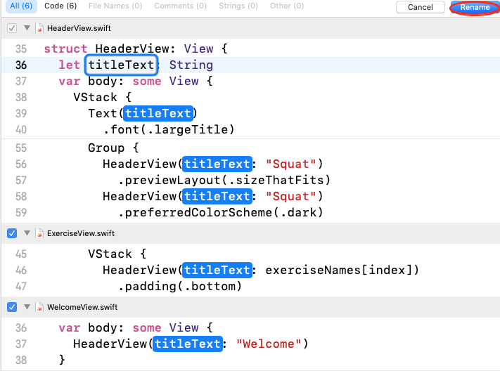
➤ 单击右上角的重命名按钮以确认这些更改，然后返回WelcomeView.swift查看结果：
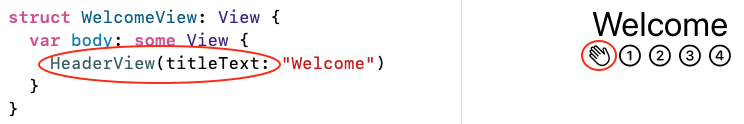
那就更好了! 用户看到的是一个页面图标，而程序员看到的是一个描述性参数。
用ZStack进行更多分层¶
到目前为止，还不错，但标题应该在页面的顶部。还有一个历史按钮，应该在页面的底部。主要内容应该在视图中居中，与页眉和按钮的高度无关。
在HistoryView中，你用一个ZStack将解雇按钮定位在右上角（topTrailing），而不影响其他内容的布局。
在这个视图中，你将使用ZStack把标题和历史按钮放在一个层中，把它们分开。然后你将在另一个层中创建主要内容，默认为居中。
➤ 首先，将HeaderView嵌入一个VStack中，然后将该VStack嵌入一个ZStack中。
ZStack {
VStack {
HeaderView(titleText: "Welcome")
}
}
➤ 在VStack中，在HeaderView下面，添加这段代码：
Spacer()
Button("History") { }
.padding(.bottom)
你在一个VStack中设置了页眉和历史按钮，用一个Spacer将它们分开，并做了一些填充，使按钮不会太靠近底部边缘：
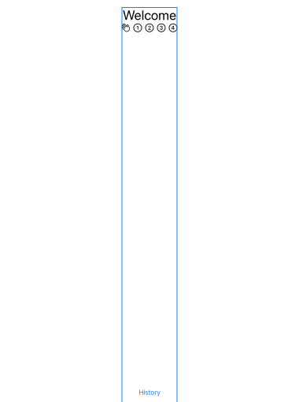
➤ 现在要填入中间的空间。将此层添加到ZStack中：
VStack {
HStack {
VStack(alignment: .leading) {
Text("Get fit")
.font(.largeTitle)
Text("with high intensity interval training")
.font(.headline)
}
}
}
Note
你可以在现有的VStack上面或下面添加这个VStack。这并不重要，因为这两个层中没有重叠的内容。
内部的VStack包含两个不同字体大小的Text视图。你把它的对齐方式设置为leading，以便对两个Text视图进行左对齐。
这个VStack是在一个HStack中，因为你要在文本的右边放置一个Image。而HStack在一个外部的VStack中，因为你要在文本和图片的下面添加一个Button。
修改一个图像¶
➤ 在Assets.xcassets中查找升压图像：
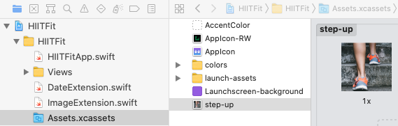
➤ 回到WelcomeView.swift中，用Shift-Command-L打开库（或点击+工具栏按钮），选择媒体标签：
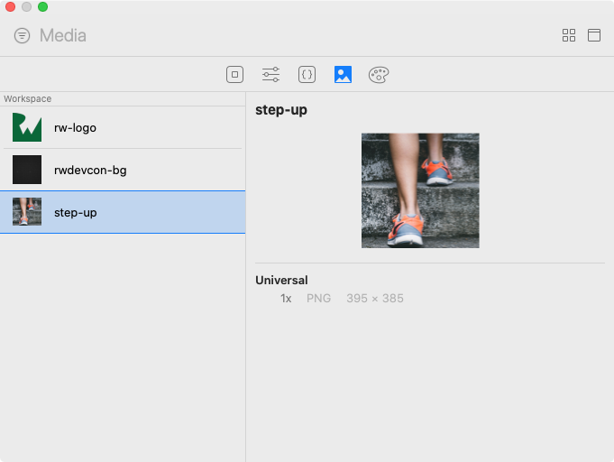
➤ 要在正确的地方插入阶梯，最简单的方法是把它拖到代码编辑器中。抓住它，同时用光标点击代码，直到打开一行，就在有两个Text视图的VStack下面。放开图片，它就会出现在你的代码中：
HStack {
VStack(alignment: .leading) {
Text("Get fit")
.font(.largeTitle)
Text("with high intensity interval training")
.font(.headline)
}
Image("step-up") // your new code appears here
}
➤ 你通常需要向一个Image添加几个修改器，因此在检查器面板中打开属性检查器：
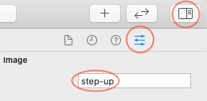
Note
如果你没有看到值为阶梯式的图像，请选择图像。您可能必须关闭然后重新打开检查器面板。
➤ 首先，你必须添加一个修改器，让你调整图像的大小。在添加修改器字段中，输入resiz，然后选择Resizable。
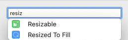
不要担心图像会被拉长。你会用下一个修改器来解决这个问题。
➤ 调整图像大小时，通常要保留长宽比。因此，搜索aspe并选择Aspect Ratio：
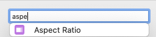
➤ 建议的contentMode值是fill，这是你通常想要的，所以按回车键接受它。
➤ 现在图像看起来比较正常，但它太大。在框架部分，将宽度和高度设置为240。
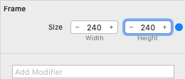
这看起来很不错! 把它剪成一个圆怎么样？
➤ 搜索clip并选择Clip Shape：
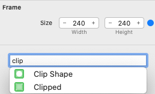
再一次，建议Circle()是你想要的，所以接受它。
你的HStack代码和画布现在看起来像这样：
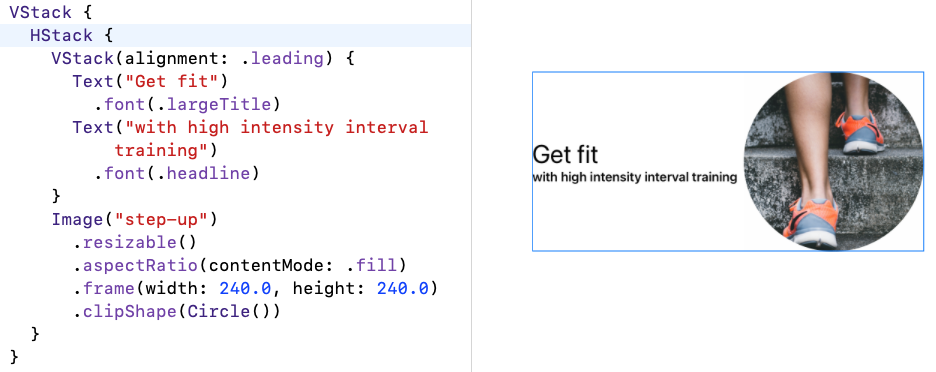
➤ 你只需要再做一个调整：如果将文字与图片的底部对齐，看起来会更好。只要改变包围的HStack的对齐方式即可：
HStack(alignment: .bottom)
这是你的欢迎页：
你已经做得够多了，使它看起来很受欢迎。:] 在第10章"完善你的应用程序"中，你将添加一些更多的图片。
使用自定义修改器¶
你会一直使用这个三合一的Image修饰器：
.resizable()
.aspectRatio(contentMode: .fill)
.frame(width: 240.0, height: 240.0)
每个人都是如此，尽管框架尺寸不会总是240。在ImageExtension.swift中，你会发现resizedToFill(width:height:)，它封装了这三个修改器：
func resizedToFill(width: CGFloat, height: CGFloat)
-> some View {
return self
.resizable()
.aspectRatio(contentMode: .fill)
.frame(width: width, height: height)
}
它扩展了Image视图，所以self就是你用resizedToFill(width:height:)修改的Image。
要使用这个自定义修改器，请回到WelcomeView.swift中。注释(Command-/)或删除Image("step-up")的前三个修改器，然后添加这个自定义修改器：
.resizedToFill(width: 240, height: 240)
视图看起来是一样的，但代码却少了一点。
用文字和图片给按钮贴标签¶
最后一个细节是一个Button。用户可以点击这个按钮移动到第一个练习页，但标签上也有一个箭头图像，表明他们可以滑动到下一页。
你所创建的其他按钮只有文本标签。但是要给一个Button贴上文字和图像的标签是很容易的。
➤ 在中心视图VStack中，在有图像的HStack下面，添加这个代码：
Button(action: { }) {
Text("Get Started")
Image(systemName: "arrow.right.circle")
}
.font(.title2)
.padding()
这段代码与你所创建的其他按钮有很大不同，需要做一些解释。SwiftUI使用了大量的语法糖：SwiftUI不使用官方的方法调用，而是让你写的代码更简单，更易读。
如果你开始在代码编辑器中输入Button，Xcode会自动提示这个官方的Button签名：
Button(action: {}, label: {
<Content>
})
Button有两个参数。action是一个方法或一个包含可执行代码的闭包；label是一个描述按钮action的视图。两个参数值都可以是闭包，所以action可以是一个以上的可执行语句，label可以是一个以上的视图。
Swift
你可以将函数调用的最后一个闭包参数移到括号外的尾部闭包。
如果你从canvas库中拖动一个Button到你的视图中，你会得到这个版本的Button签名，其中label的内容是一个尾部闭包：
Button(action: {} ) {
<Content>
}
这就是上面的Get Started Button中使用的语法，Text和Image视图在一个隐含的HStack中。
你创建的其他按钮使用了更简单的Button语法，按钮的标签只是一个String，而按钮的动作则在尾部的闭合中。比如说：
Button("History") { }
➤ Label视图是为Button贴上文字和图像标签的另一种方法。注释掉(Command-/) Text和Image两行，然后在label闭包中写下这一行：
Label("Get Started", systemImage: "arrow.right.circle")
仔细看看。你看到什么变化了吗？
Note
你可以用 labelStyle修改Label，只显示文字或只显示图像。
图片在文本的左边。这在我看来是错误的。一个指向右边的箭头应该出现在文本之后。不幸的是，对于这个特定的Button，没有办法使图像出现在文本的右边，除非你使用的语言是阿拉伯文，从右到左书写。Label是图标-文本列表的理想选择，你希望图标在前缘很好地对齐。
➤ 删除Label，取消对Text和Image的注释。
➤ 只是为了好玩，给这个按钮加上边框。在padding()下面添加这个修改器：
.background(
RoundedRectangle(cornerRadius: 20)
.stroke(Color.gray, lineWidth: 2))
你把一个圆角矩形放在有衬垫的按钮周围，指定角的半径、线的颜色和线的宽度。
挑战¶
当你的用户在最后一个练习页上点击Done时，你的应用程序将显示一个模版，祝贺他们的成功。
你的挑战是创建这个SuccessView：
挑战：创建Success View¶
- 创建一个新的
SwiftUI视图文件，名为SuccessView.swift。 - 用一个包含
hand.raised.fillSF符号和截图中的文字的VStack替换其Text视图。 SF符号在一个75乘75的框架内，颜色为紫色。提示：使用自定义的`图像'修改器。- 对于大的
High Five!标题，你可以使用fontWeight修改器来更加强调它。 - 对于三个小行的文字，你可以使用三个
文本视图。或者参考我们的Swift风格指南bit.ly/30cHeeL，看看如何创建一个多行字符串。Text有一个multilineTextAlignment修改器。这个文本的颜色是灰色的。 - 像
HistoryView一样，SuccessView需要一个按钮来解散它。在屏幕底部的中心位置有一个继续按钮。提示：使用ZStack使High Five!视图保持垂直居中。
下面是High Five!视图的特写：
你会在本章的挑战文件夹中找到这个挑战的解决方案。
关键点¶
Date类型有许多内置的属性和方法。你需要配置一个DateFormatter来创建有意义的文本来显示给你的用户。- 使用
Form容器视图来快速布置表的数据。 ForEach让你在一个集合中的项目上循环。ZStack对于保持一个层的视图居中而将另一个层的视图推到边缘是很有用的。- 你可以为
HStack指定垂直对齐值，为VStack指定水平对齐值，为ZStack指定组合对齐值。 Xcode帮助你快速安全地重构一个参数的名称。Image经常需要同样的三个修改器。你可以创建一个自定义的修改器，这样你就不会重复自己了。- 一个
Button有一个标签和一个动作。你可以用几种不同的方式定义Button。
从这里走到哪里？¶
你的视图都已经布置好了。你急于实现所有的按钮操作。但是...你一直在使用硬编码的样本数据来布置你的视图。在你能使一切正常工作之前，你需要设计你的数据模型。模型-视图-控制器的分工仍然适用。你还会学到更多关于Swift和Xcode的知识。